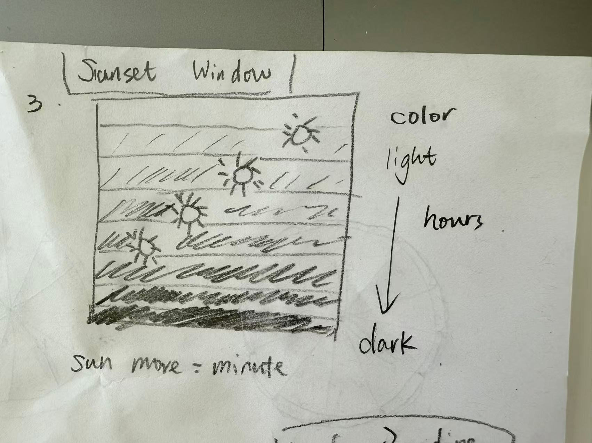
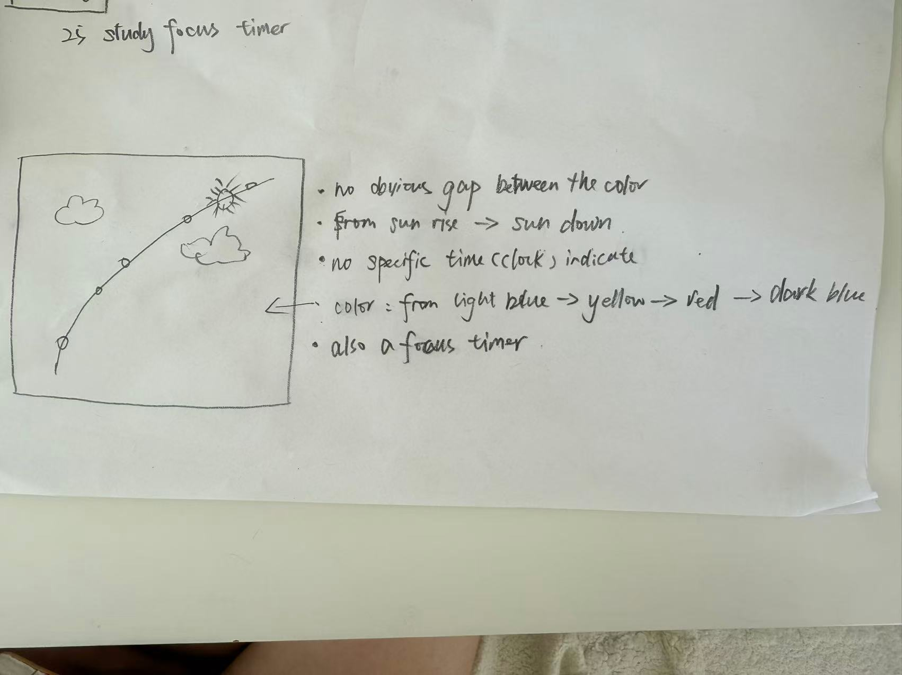

Final Clock 1: Focus Window Clock
Sketch iteration documentation


Design process: My first version was closer to a traditional clock. I used a sunset window scene and imagined the sun as the main time indicator. The sun moving from left to right was intended to represent minutes, while the sun moving from top to bottom was intended to represent hours. However, after sketching and testing this idea, I realized that the mapping was not very intuitive. It was visually interesting, but it did not clearly answer why someone would use it instead of a normal clock or timer.
After receiving feedback, I reframed the design around a more specific audience and use case: students starting a short focus session. The original 2-minute version worked as a quick prototype demo, but it did not match a realistic study behavior. I changed the intended session length to 25 minutes because it better matches a Pomodoro-style study session and gives the visual transition enough time to feel meaningful. This change made the design feel less like a decorative animation and more like a useful focus tool.
Feedback-based revision: One major issue in the earlier version was accessibility. The sun path blended too much with the background, so I revised it with a dark outline and a lighter inner line. This creates stronger contrast and makes the path readable even when the sky colors are warm or bright. I also made the active sun larger, added a stronger stroke, and used size and shape in addition to color. This way, users do not have to rely only on color to understand the current progress.
I also reconsidered the meaning of the visual metaphor. The fog is not just decoration; it represents the unclear mental state at the beginning of a study session. As the timer progresses, the fog becomes lighter, the center of the window opens up, and the sky becomes warmer. This “clearing the fog” effect connects the visual change to the user’s experience of slowly entering focus. Near the end, the warmer color becomes a subtle cue that the user is close to a break.
Interaction and edge cases: I added Start, Pause, and Reset controls because a real study session is often interrupted. If the user is interrupted, they can pause instead of losing their progress. If they want to begin again, they can reset intentionally. I also removed extra status labels such as “Ready” or “In flow” because they made the interface feel crowded and less ambient. Instead, I let the window itself communicate the session stage through fog, light, color, and sun movement.
Time mapping: The sun’s movement no longer represents exact clock time. Instead, it represents progress through the focus session. The exact remaining time is still available in a high-contrast time label, but it works as a backup rather than the main experience. The main design goal is peripheral awareness: users can glance at the window and sense whether they are at the beginning, middle, or end of the session without constantly reading numbers.
I applied several information visualization principles in the final version. For mapping, the sun movement, fog clearing, and color shift all correspond to session progress. For accessibility, I increased contrast on the sun path and used size and outline to make the active sun more visible. For hierarchy, the visual scene remains primary, while the timer and buttons are placed in a separate control panel. For interaction, Start, Pause, and Reset support realistic use instead of forcing the user to restart accidentally.
Self-reflection / future work: This version is stronger because it moves beyond simply representing time and instead supports how time is experienced during a study session. It is not meant to replace every timer; it is designed for moments when students need gentle time awareness and emotional support while getting into focus. In a future version, I would add optional session lengths, such as 10, 15, or 25 minutes, so users can choose the type of focus session that fits their task. I would also test the design with students to see whether the visual transition actually helps them feel less pressure and less tempted to check their phones.